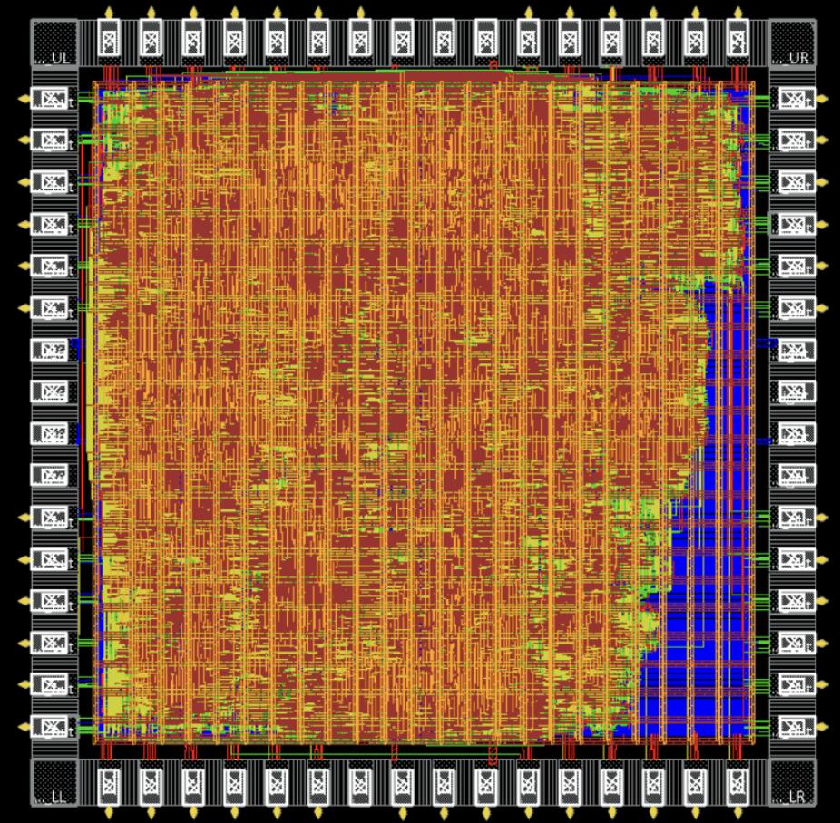

2026 · TAPEOUTTSMC 180nm · RTA-V4
Dual-Mode INT8 CGRA / INT4 Systolic Accelerator
A 4×4 reconfigurable spatial accelerator that supports both CGRA-style INT8 kernels and packed INT4 systolic execution on the same processing-element fabric. I contributed external-interface RTL and end-to-end verification, and led physical implementation through timing closure and signoff.
4 × 4reconfigurable PE array
2 modesCGRA INT8 + systolic INT4
4 FIFOsN/W inputs, E/S outputs
50 MHzpost-route timing met

Routed layout
Click for full case study